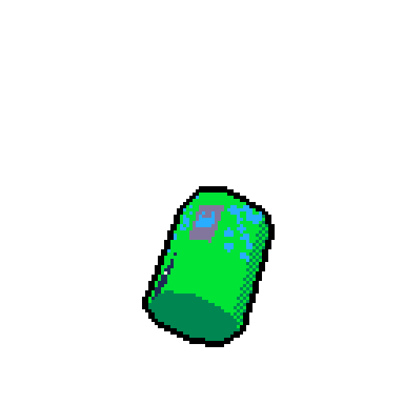

Hey, aoughgghh
I have been sitting here for the past 20 minutes thinking of something to say and to be frank with you
there is not much to say as of right now other than maybe a couple of words of me welcoming you to this blog
but I am too cool for that, how about I introduce me.

look at this soda can I cooked up
I have a passion for working on things, a lot of things. I sort of enjoy creating stuff, there is not really
one thing that I am particularly drawn to which is something that has been annoying me lately. I just want to do
everything all at once which is realistically unrealistic, but thats what I like. I have taken passion in drawing though
I never got too good at it, videography (no idea what that even means but videos in general) I used to love
and I still do love documenting things and making videos on them though Its been a while since I have done
that I do think its the thing I am most experienced at. I have been dipping my toes a little bit in 3D
modelling but dipping toes I mean the surface of my toes just touching the waters of 3D, that soda can thing
I just showed you is probably my best 3D work right now but I honestly really do enjoy that stuff and I have
been practicing at it for a bit.
Also did try out writing which is something I also quite enjoy, I actually
have a lot of ideas that I personally (personally) think are quite entertaining though the most I ever
committed to was like 20 pages to what I considered to be a novel size story at the time, its still ongoing
but I haven't been adding much, writing also sort of came to me as a passion like a domino effect from
videos in general, writing scripts and all that made me really get into writing as well. Music is something
I have experimented with, creating some mashups every now and then and actually experimenting on works and
sampling but thats stuff I dont think will ever see the day of light and as of right now I think my biggest
passion is programming, I will be linking a couple of the many projects I have programmed and cooked up
below.
Programming is something I actually really enjoy, though I am still also a beginner in it but I do
think that I am progressing pretty well in it. I am mostly familiar with javascript and some python though
I never really got interested in python. Well I think you see a common theme here. Lack of commitment. Thats
why I created this blog. To keep track of my work over time and sort of motivate myself to work on stuff.
I will be posting updates on pretty much all of these hobbies and passions that I get into and I hope you
find as much as interest as mine those hobbies.